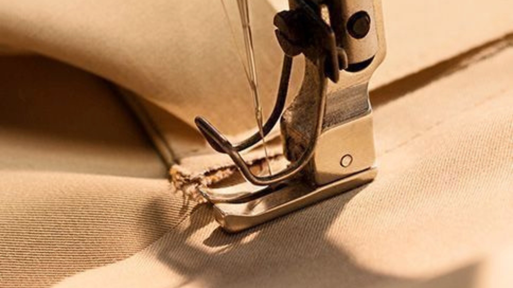
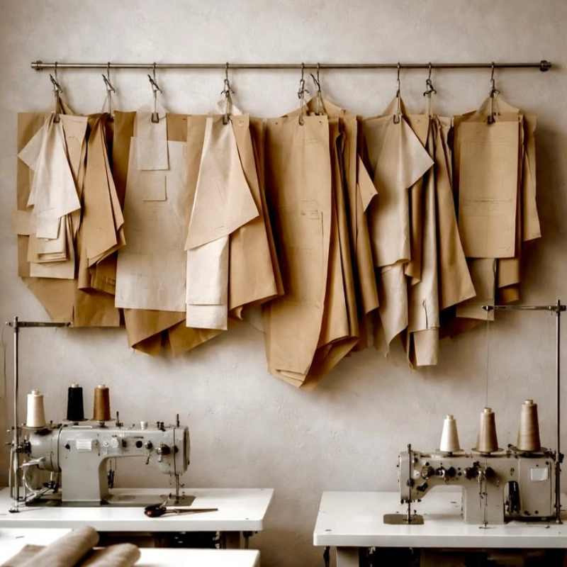
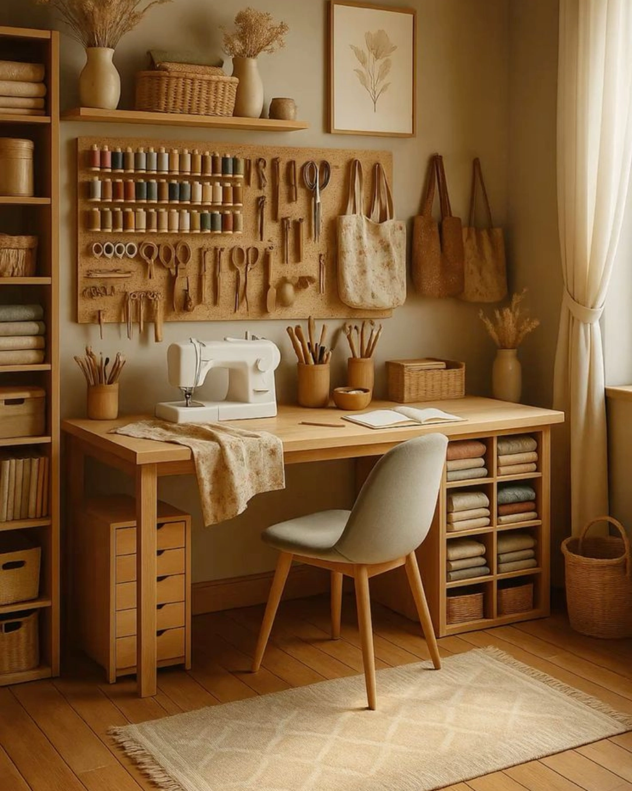
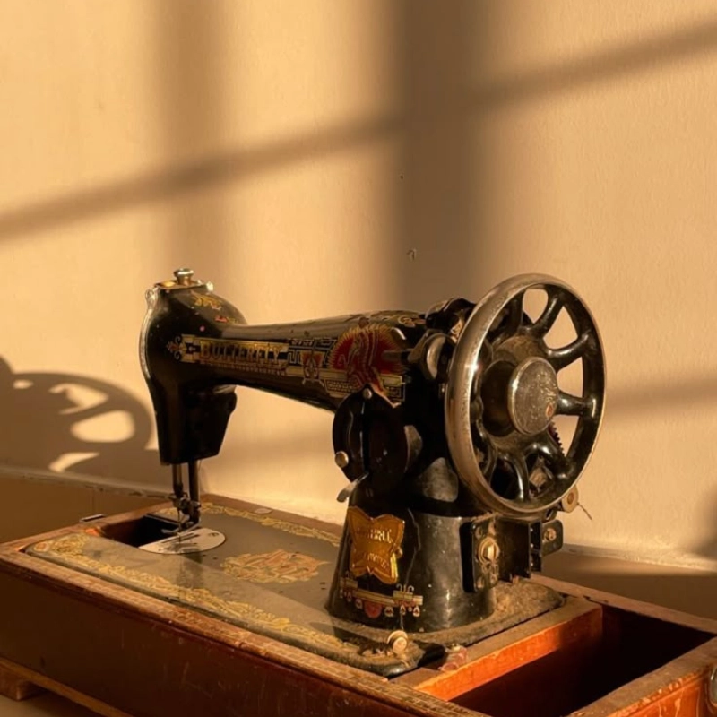
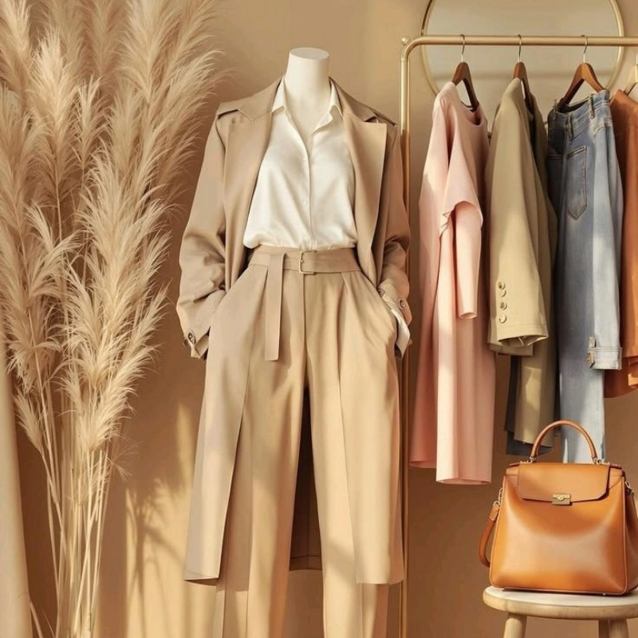

Onde a precisão contemporânea encontra o calor do artesanato. Criamos experiências e produtos com alma, propósito e perfeição técnica.

Detalhes
Cada peça é meticulosamente pensada para durar uma vida inteira.

Nascido da paixão por materiais nobres e design atemporal, nosso ateliê representa um refúgio do ritmo acelerado moderno. Acreditamos no luxo lento, onde cada etapa do processo criativo é respeitada e celebrada.
Combinamos técnicas seculares com ferramentas de extrema precisão para esculpir peças que contam histórias, ancoradas em nossa paleta de tons terrosos e texturas de pedra.
Experiências táteis e visuais desenhadas com exclusividade.
Transformação de peças antigas e desenvolvimento de modelos sob medida...
Serviços essenciais como barras, cós, troca de zíperes e reparos diários...
Ajustes finos e caimento impecável para ternos, camisas e vestidos de festa...
Um vislumbre do nosso portfólio.




Preencha o formulário abaixo para nos contar sobre sua visão. Retornaremos em breve para agendar uma consulta em nosso ateliê.
São Paulo, SP - Brasil